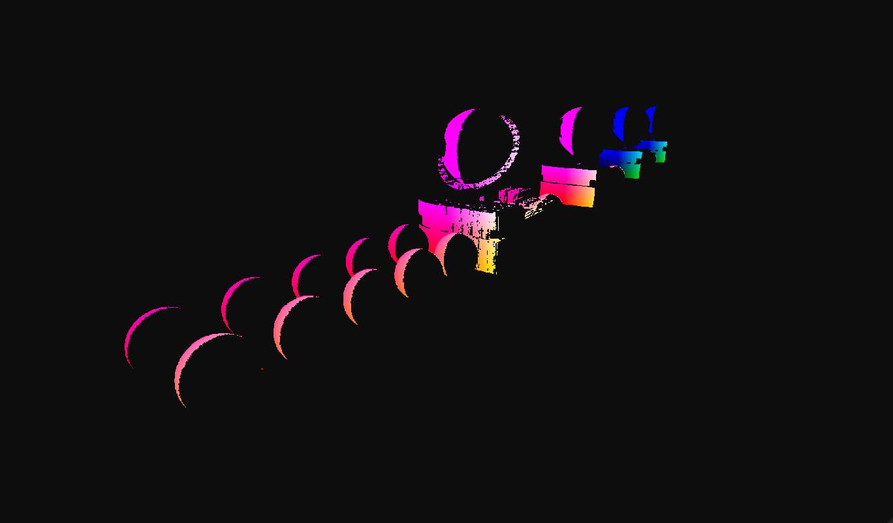
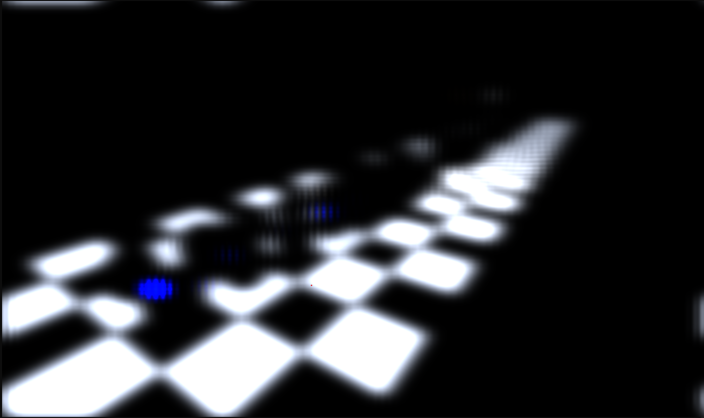
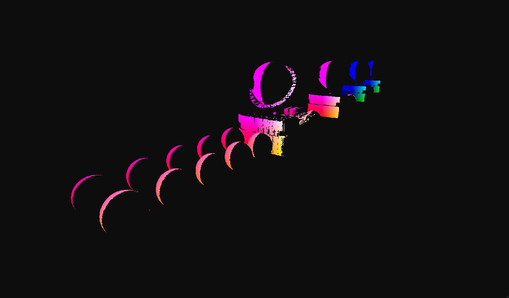
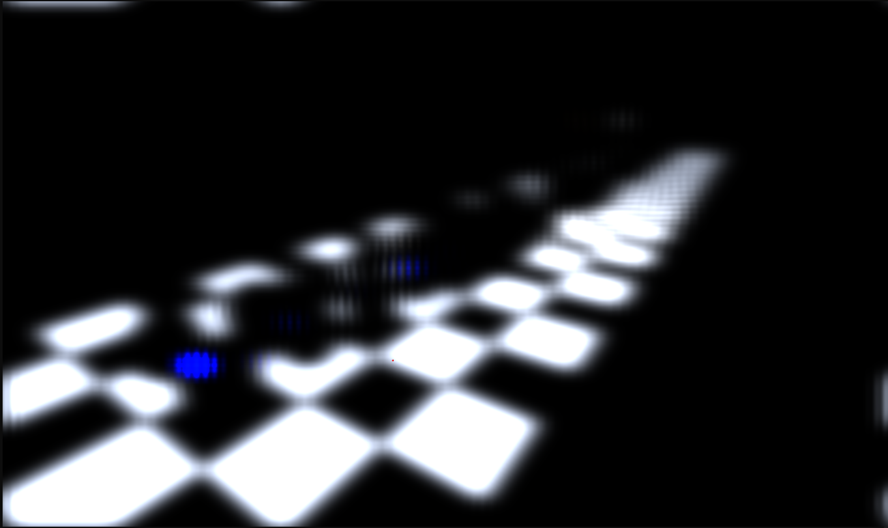
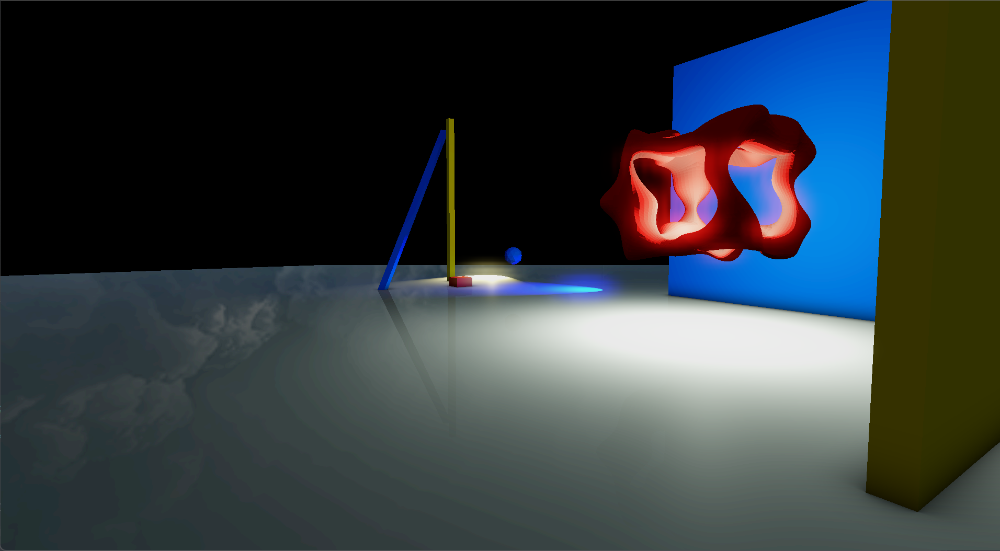
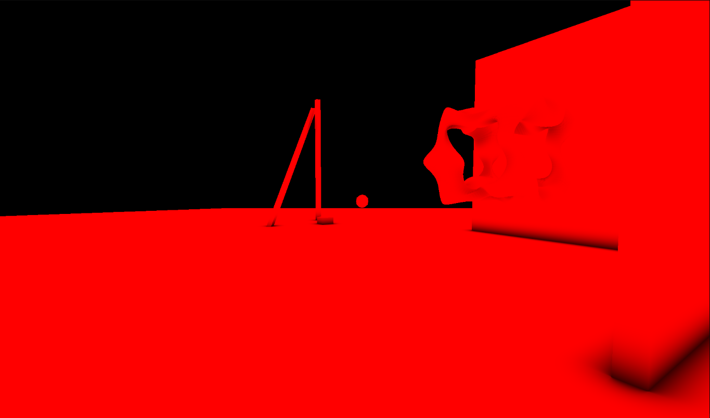
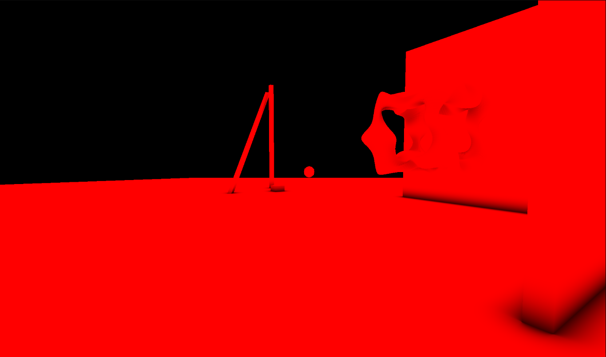

Noire Engine 2 supports a Forward+ rasterization pipeline, carrying a small compressed G-buffer, into a RTX-powered realtime ray tracing pipeline.
Here is an outline of my rendering architecture:
The bulk of the code can be found in Renderer.cpp. Here is the Render function:
1 2 3 4 5 6 7 8 9 10 11 12 13 14 15 16 17 18 19 20 21 22 23 24 25 26 27 28 29 30 31 32 33 34 35 36 37 38 39 40 41 42 43 44 45 46 47 48 49 50 51 52 53 54 55 56 57 58 59 60 61 62 63 64 65 66 67 68 69 70 71 72 73 74 75 76 77 78 | void Renderer::Render(const CommandBuffer& commandBuffer) { const Scene* scene = SceneManager::Get()->getScene(); // prepare and upload/update info and buffers { Prepare(scene, commandBuffer); s_ShadowPipeline->Prepare(scene, commandBuffer); if (UseGizmos) s_GizmosPipeline->Prepare(scene, commandBuffer); if (DrawSkybox) s_SkyboxPipeline->Prepare(scene, commandBuffer); #ifdef _NE_USE_RTX // updates acceleration structures as needed s_ReflectionPipeline->Prepare(scene, commandBuffer); #endif } //memory barrier to make sure copies complete before rendering happens: InsertPipelineMemoryBarrier(commandBuffer); // render objects { // draw rtx #ifdef _NE_USE_RTX RunRTXReflection(scene, commandBuffer); #endif // render shadow passes s_ShadowPipeline->Render(scene, commandBuffer); // draw scene s_OffscreenPass->Begin(commandBuffer, m_OffscreenFrameBuffers[CURR_FRAME]); { DrawScene(scene, commandBuffer); // draw skybox if (DrawSkybox) s_SkyboxPipeline->Render(scene, commandBuffer); } s_OffscreenPass->End(commandBuffer); #ifdef _NE_USE_RTX RunRTXTransparency(scene, commandBuffer); #endif // bloom s_BloomPipeline->Render(scene, commandBuffer); // ray traced AO RunAOCompute(scene, commandBuffer); // compose together everything and get ready to present s_CompositionPass->Begin(commandBuffer, m_CompositionFrameBuffers[CURR_FRAME]); { RunPost(commandBuffer); } s_CompositionPass->End(commandBuffer); // gizmos pass s_UIPipeline->BeginRenderPass(commandBuffer); if (UseGizmos) s_GizmosPipeline->Render(scene, commandBuffer); s_UIPipeline->EndRenderPass(commandBuffer); // UI pass s_UIPipeline->FinalizeUI(); s_UIPipeline->BeginRenderPass(commandBuffer); { s_UIPipeline->Render(scene, commandBuffer); } s_UIPipeline->EndRenderPass(commandBuffer); } } |
The bulk of the ray tracing work comes from building the acceleration structures. This is handled in RaytracingContext.
The bottom level acceleration structures are created ONCE on initialization for all the loaded meshes in the scene.
The top level acceleration structures are created, built once on initilization with VK_BUILD_ACCELERATION_STRUCTURE_PREFER_FAST_TRACE_BIT_KHR | VK_BUILD_ACCELERATION_STRUCTURE_ALLOW_UPDATE_BIT_KHR flags
to allow update, and it is updated whenever the scene is changed (scene.isDirty). The scene dirty flag is computed
based on whether any geometry has a changed transform in the last update cycle. Furthermore, the TLAS are built with an instance mask as follows:
uint32_t mask; switch (workflowInstances[i].material->getWorkflow()) { case Material::Workflow::Lambertian: case Material::Workflow::PBR: mask = INSTANCE_OPAQUE; break; case Material::Workflow::Glass: mask = INSTANCE_TRANSLUCENT; break; default: mask = INSTANCE_OPAQUE; } rayInst.mask = mask;
#define INSTANCE_OPAQUE (1 << 0) #define INSTANCE_TRANSLUCENT (1 << 1) #define INSTANCE_IS_SOMETHING_ELSE (1 << 2)
if (update) { // Update the acceleration structure tlasBuildData.asGeometry[0].geometry.instances.data.deviceAddress = instBufferAddr; tlasBuildData.CmdUpdateAccelerationStructure(cmdBuf, m_tlas.handle, scratchBuffer.deviceAddress); } else { // Create and build the acceleration structure VkAccelerationStructureCreateInfoKHR createInfo = tlasBuildData.MakeCreateInfo(); m_tlas = RaytracingContext::CreateAccelerationStructure(createInfo); tlasBuildData.CmdBuildAccelerationStructure(cmdBuf, m_tlas.handle, scratchBuffer.deviceAddress); }
// Specular IBL from pre-filtered environment map //float lod = roughness * MAX_REFLECTION_LOD; //vec3 specularIrradiance = textureLod(prefilterEnvMap, R, lod).rgb; // obtain reflection color from rtx ivec2 pixelCoord = ivec2(gl_FragCoord.xy); vec3 reflectionColor = imageLoad(raytracedReflections, pixelCoord).rgb;
vec3 hitValue = vec3(0); for(;;) { traceRayEXT(topLevelAS, // acceleration structure rayFlags, // rayFlags INSTANCE_OPAQUE, // cullMask 0, // sbtRecordOffset 0, // sbtRecordStride 0, // missIndex prd.rayOrigin, // ray origin tMin, // ray min range prd.rayDir, // ray direction tMax, // ray max range 0 // payload (location = 0) ); hitValue += prd.hitValue * prd.attenuation; prd.depth++; if(prd.done == 1 || prd.depth >= rayConstants.rayDepth) break; } imageStore(raytracedReflections, ivec2(gl_LaunchIDEXT.xy), vec4(hitValue, 1.0));
shaders/raytracing/reflections.rchit.


Lets talk about AO. Instead of disptching from pipeline, the AO rays are dispatched from compute shaders an ray queries. The direction and position are obtained from the compressed G-buffer normals, and the rays are aggregated overtime. Heres a snippet of the ray queries:
// Tracing a ray and returning the weight based on the distance of the hit float TraceRay(in rayQueryEXT rayQuery, in vec3 origin, in vec3 direction) { // ignore any-hit shaders and closest-hit shaders , and terminate the ray on the first found intersection uint flags = gl_RayFlagsOpaqueEXT | gl_RayFlagsSkipClosestHitShaderEXT | gl_RayFlagsTerminateOnFirstHitEXT; rayQueryInitializeEXT(rayQuery, topLevelAS, flags, INSTANCE_OPAQUE, origin, 0.0f, direction, rtao_radius); // Start traversal: return false if traversal is complete while(rayQueryProceedEXT(rayQuery)) { } float intersectionType = rayQueryGetIntersectionTypeEXT(rayQuery, true); return (intersectionType != gl_RayQueryCommittedIntersectionNoneEXT) ? (rtao_distance_based == 0 ? 1.0f : (1.0f - (rayQueryGetIntersectionTEXT(rayQuery, true) / rtao_radius))) : 0.0f; }
 





I initially wanted simple bloom using a simple vertical and horizontal gaussian pass, but it looked really bad. So I implemented the downsampling and upsampling approach by taking a 3x3 tent sampling. I also used Karis average for the first downsampling passe to reduce fireflies

 
